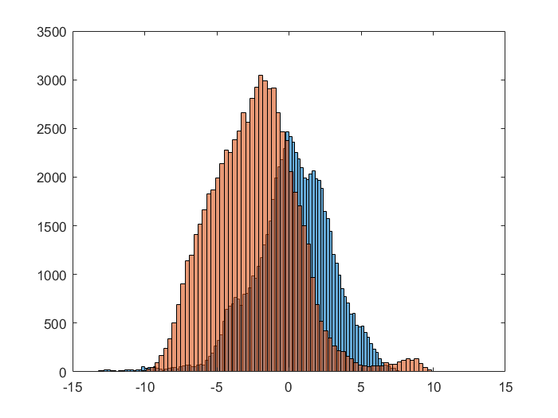
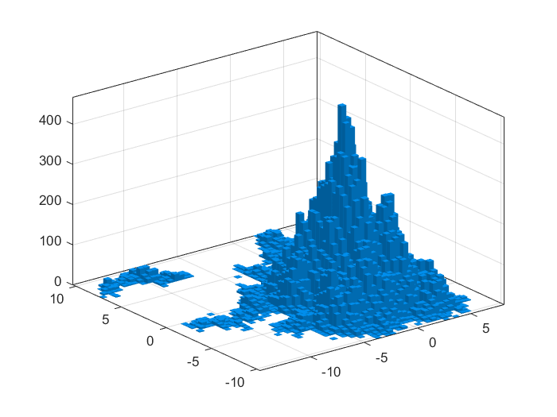
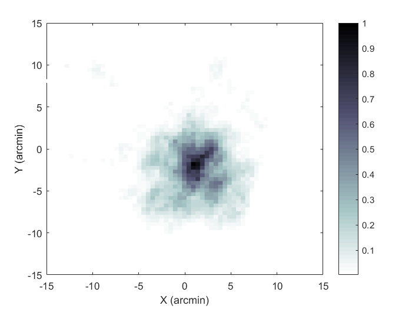

Contents
Matlab tutorial for BCS 519 stats course
Looking at x y eye traces.
for more basic instruction, checkout this website
08/2020 Ashley M. Clark
clear all
clc
Types of Data
struct.matrix = [1 2 3; 4 5 6; 7 8 9];
struct.vector = [1 2 3 4 5 6 7 8 9];
%test = struct.matrix * struct.vector;
load in data .mat file
load tutorialData.mat
create concatenated vector of all data
x = []; y = []; for numTrials = 1:length(data.individualSizeChar.strokeWidth_3.position) x = [x data.individualSizeChar.strokeWidth_3.position(numTrials).x]; y = [y data.individualSizeChar.strokeWidth_3.position(numTrials).y]; end
plot histograms
figure;
histogram(x);
hold on
histogram(y);
 Create 3D histogram
n_bins = 50; limit.xmin = floor(min(x)); limit.xmax = ceil(max(x)); limit.ymin = floor(min(y)); limit.ymax = ceil(max(y)); figure; temp = histogram2(x, y, n_bins); temp2 = temp.Values; result = temp2./(max(max(temp2)));
Turn 3D into color histogram
figure; result(result==0)=NaN; h = pcolor(linspace(limit.xmin, limit.xmax, size(result, 1)),... linspace(limit.ymin, limit.ymax, size(result, 1)),... result'); colormap(flipud(bone)) set(h, 'EdgeColor', 'none'); axis([-15 15 -15 15]); hold on colorbar xlabel('X (arcmin)'); ylabel('Y (arcmin)');